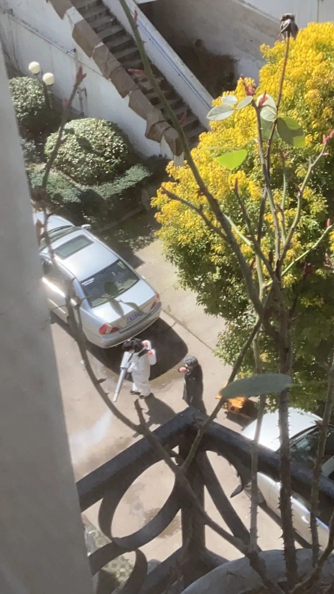

武汉拉网排查病人 一知名小区行动迟缓惹质疑
原文链接 备份链接 【财新网】（记者 吴红毓然）“今天是拉网排查的最后一天，谁收到过电话了？”2月19日，一位常青花园第五社区业主问道，“从疫情爆发到现在，我们全家都从来没有接到一个排查的电话。我父母不会用微信，也不会在群里自查后上报。 …
澎湃新闻记者 葛明宁 发自武汉 实习生 张卓 沈青青 蓝泽齐
消毒开始了。
形似手枪的喷雾器，汩汩而出气状的白烟，隆隆作响。全副武装的消毒公司员工，肩扛着设备，从一楼喷洒到七楼。
2月17日起，武汉市开展为期三天的大排查，希望将新冠病毒感染确诊、疑似病例、密切接触者，以及有发热症状的四类人群“应收尽收”。
在这个位于长江西岸的老小区，“消毒”是人们最迫切的愿望。小区间或进出的救护车，身穿白色防护服的工作人员，滋生出各种想象，包括谣言。业主们在社交媒体上反复发帖，要求社区增加消毒频率。
尽管社区回应，许多人心惶惶的楼栋并没有病人，“请居民不信谣、不传谣”，但最终他们还是请来了消毒队。

2月17日，消毒开始了，共持续三四天时间 。
楼道弥漫着雾化的消毒水，和其他武汉小区一样，2月20日，这里进入“全封闭管理”模式。
眼下，足不出户已经多日，业主们的焦虑似乎没有解除——一面来自买菜买药之类的日常，一面来自小区里可疑的“异动”。
疫情中的一个武汉小区，正在经历复杂的情绪波折。
1
1
1
小区外观有些陈旧，3000多名住户里中老年人占了大半。2月中下旬，已是“四类人群”清零的最后时刻。但在小区深处的一栋居民楼，有人还是怀疑，有遗漏的病人。

该小区于2000年竣工，地处偏僻，住户多是老年人。
二楼的王凤英50多岁。她隔着纱门对记者说，物资紧张可以理解，但小区里有的事，令她心里打鼓——
小区门口有个棋牌室，老板是不到七十岁的老太太。王凤英的老公常去打牌，与他们家人很熟。女店主在年前被看见去医院吸氧，听说也发过烧。
“以前只听说她有高血压、颈椎病。她生病以后，我们反复打过几个视频电话，想问候她，全都是她的家人接电话，总说她的病还好。”
后来女店主去世了，家人说死因是急性心肌梗塞，但王凤英不信。那时，小区的微信群都在提醒不要接近病人和家属，居民们遇到会绕道走。
她很想问女店主的真实死因，但“我们不好打听，问的话，就像是我们要看她家的笑话”。
王凤英有两个八十多岁的亲戚，都是确诊的“新冠”患者，那时床位紧张，他们没能住进医院，1月下旬先后去世。临终时，他们才从家里被拉去急救中心，再被拉去殡仪馆。
王凤英自认还年轻。但她的同学群里，也不时有人提到同龄的朋友去世，对王凤英来说，那都是有名有姓的人，她的心止不住地震颤。
“莫得办法呀。这是一下子爆发出来的，医院收不了这么多，年纪大了，抵抗力差了呀。这个病它没有特效药，就是靠免疫力拼呀。”
在小区封闭管理前，她也不愿意迈出家门一步，要不是家人要吃要喝的话。
她两三天出一次门，回家给衣服喷上消毒水，然后挂到阳台上。她用掉了一包鞋套，很遗憾自己没“眼镜”（护目镜）。万不得已出门倒垃圾，她总是心里很慌。
说着话，王凤英往空白的楼道里扫视，也许楼上有发热病人，只是躲起来，不愿意说。她对记者说，很盼望消毒，把整栋楼都彻底喷一遍。
1
2
1
不时有救护车和接送病人的白色面包车停在小区门口。车辆的照片被拍下来，在业主自建的微信群里流传：有一辆白色的车子开出去了。
业主群里大多是生活信息，例如自发团购口罩和食物的接龙活动，但有时疫情“线索”也在这里流通。
听说，小区新增了确诊病例，“谁能告诉我啥时候带走的啊？”一个年轻的头像发问，“我下午稀里糊涂地在外面……谁能告诉我有没有跟（病毒）擦身而过？”
“人是在x栋x单元上的车。”另一人说。
“是有个什么车子进去，好像跟门口的人还争论了两句，我看了一眼……然后出来的时候，我在门卫室这边，露了一点头出来。”她连发了几个哭泣的表情。
业主们试图复盘小区“疫情”的起源和传播路线。
王凤英的朋友，住在三楼的江小梅肯定地说，这病是小区里的老年舞蹈队吃年夜饭传开的。她们回来后，有一部分人发烧，有的住院了。
江小梅揣摩着，舞蹈队里的一些阿姨很爱面子，她们得了病，可能“阴着”不说，平时她们和老公吵架了也不会说。
“听说有个女的老公一直在咳”，江小梅神秘地对记者说。她是个说话中气十足的老年人。江小梅一直不喜欢舞蹈队——何况，舞蹈队与小区物业走得太近，江小梅对物业又不满意。
她抱怨说，物业聚餐“抠门”，端一盆圆子上来，物业的人一下就倒走了，要带回家里。“我说这次你吃得好吧，大家全部都到医院里去了呗。”
自从病毒源自年夜饭的说法传开后，小区里有人四处打听，那张桌上，究竟坐着哪几个人。
在江小梅楼上，六楼的住户邱兰分析，好些密切接触者在外乱跑。比如，一个黑衣的女青年——她向记者展示了一张穿黑羽绒服的女性照片，但她不认识图片中的姑娘。
这样的图片也来自业主群。从居民楼往下俯拍的视角，据说是前一天拍的。图片上还有水印文字，“父亲已确诊”。

小区居民常看到救护车进出，拍照在微信群流传。 受访者供图
五十多岁的邱兰有些激动：“她爸爸已经住院了。她应该上报去隔离呀，她带着那个病毒，不是把我们所有人都害了吗！”
邱兰自己和儿子儿媳住在一起。她在疫情中费劲得到了批准，把儿媳妇平时独居的奶奶接来住。这些事搞得她焦头烂额。
有的业主打电话给社区要求全面消杀，那时正是疫情最胶着的时候，社区表示人手不够。业主们又提到“黑羽绒服姑娘”，要求社区对她进行强制隔离。
社区回复说，她父亲没有确诊，那个说法是谣言。于是业主们又打市长热线，投诉社区干部。有的业主看到病人家属出门买东西，选择了报警。
“社区说话的口吻比我们的硬，”邱兰的儿子说，“不肯管我们”，他有心脏病，一直喘息着。邱兰请记者不要担心，不是病毒。
七楼的住户王南很同情社区，他觉得社区和物业的工作人员没什么防护，就在户外工作，与医护人员一样，都是“搏命”，他不想给他们增加负担。
王南和老伴都快七十岁，他们在顶楼搞了一块菜地，日常摘些蔬菜使用，已经有一个月没下楼了。
王南说话慢条斯理的，他说自己是退休干部，原本是河南人，一直在武汉工作。他也想抱怨些什么，但终究停了下来。“要我怎么说呢，闺女。你要我说什么好呢。”
1
3
1
整栋楼的人都觉得消毒的事应该物业负责，而物业经理对记者说，小区有几十栋楼和十来名物业人员，其中三个看大门，两个管理，其余的是电工和保洁员。物业做不到对所有楼道进行消杀。
邱兰推荐记者去见一位热心的业主刘正凯。这是个高高胖胖的年轻人，27岁的健身教练，他自我介绍，早年爱玩，喜欢打架，现在已经改好了。
刘正凯回忆，有一天他在自家的露台上倒茶，看见一副担架抬着病人出去，他只感到一阵气血上涌，在那一瞬间，他觉得要站出来组织大家共同“抗疫”。
在健身房的不远处有家书店，刘正凯读了一本切斯特•巴纳德写的《组织与管理》。他当即制定出计划：在小区里招募年轻志愿者，最好是30岁没结婚的，40岁以下也还可以，每栋楼招一个人，统一出门采购。还要集中采购一批消毒药水，也由年轻志愿者消毒。其他时间，居民都不要出门。
这是记者见到他之前数天发生的事情。但2月13日的刘正凯有点丧气：他往小区微信群发送自己的微信二维码，然后在夜晚端着喇叭在小区里循环播放，号召居民出来参加消毒——但没有年轻人来加他的微信。
40岁的邻居姐姐想参加志愿者活动，刘正凯说，你有孩子，要注意安全，不要外出。还有几个60岁的老人也加他的微信。刘正凯觉得这与害人性命无异。他一一拒绝了他们。
后来，社区书记向记者解释，小区里本就老年人多——曾经有个活动叫“邻里关爱”，内容是60岁的志愿者给80岁的跑腿采买。以前，刘正凯从不参加小区里的社交活动，早出晚归的他只认识一个年轻邻居。
刘正凯孤独地用浇花用的小壶给自己的楼栋消了一遍毒。他觉得小区里的传言有点过分，于是独自守在大门口，记录每一日运送病人车辆出现的频率。
因为业主群流传某一户人家有还未送医的确诊病人，刘正凯决定亲自上门验证真假，他特意选择晚上，这样家中必定有人。出门前，他甚至戴上了驱邪的钟馗挂件，结果证明都是谣言，那单元房里没有住人。

刘正凯出门消毒，有些紧张。他戴了个钟馗挂件，用于辟邪。 受访者供图
“一个个都只会在群里传图片，瞎说八道。”刘正凯后来变得有些愤世嫉俗。
但是，他又能理解他们的心情。采访的第二日，他也给记者发来那张黑羽绒服女性的照片。“整栋楼的人都吓得要命。”刘正凯说，“能不能帮忙核实一下？”
他有个朋友的母亲发热，住在某栋楼的楼顶。楼下出过“新冠”确诊病人，那天晚上，刘正凯六神无主，和记者探讨是否要把病人送下楼去看病，“会经过确诊病人的门口”。
最终，朋友的母亲还是去看病了，确诊也是“新冠”肺炎。
1
4
1
“你跟他们很难说得通。”记者见到负责该小区的社区书记周文山时，他显得很烦闷。
“有的人投诉说物业只往楼道口洒点清水，这怎么可能？还有人要整栋楼全部消杀，物业经理说，哪怕高档小区的物业也做不到。居民能听得进这种话？”
物业一般归房屋管理局指导。周文山说，社区平时让物业做些事，靠的是私人情面。在“四类人员”“清零”的当口，周文山再顾不上居民和物业之间的矛盾。
2月13日，他正忙着劝说密切接触者去隔离点。据街道办事处的人说，周文山曾到某户居民家门口蹲了一晚——劝说是一件机械的事，是不断与人说同一套话，最后把人“哄”上车去。
“隔离是为了你的安全，也是为了你家人的安全。政府花这么多钱，都是为了你们居民好。麻烦的并不是你，你身体好，你屋里（家里）要是别人身体有点……划不来嘛，到隔离点去有吃有喝，又不要你掏一分钱。”

社区服务中心位于一条城乡结合部的小巷子里
近一半人都需要周文山反复说这一套话。2月19日，记者第二次见到他，仍旧如此。
他正接起一个电话，那一端的同事说，解释不通，有个密切接触者不想带被子去隔离点。周文山说：“那我们一下买不到嘛，你说是不是，你说能不能买到？”
酒店改为隔离点后，他们“抢着”把密切接触者送进去。否则，出现新一例的确诊，就会立刻多出许多密切接触者，又有很多变数。
武汉各区疾控中心掌握街道、社区的“四类人员”身份信息。除了各街道城管和志愿者负责开车接送，周文山所属的区要求社区干部亲自将“四类人员”送上车，完成交接。如果是确诊的病人，街道办事处要派员跟车。
于是，在2月19日下午，周文山两次艰难地将自己套入一身工业级别防护服里。他说，社区干部大多都是女的，胆子小。而他，是个55岁的男人。这一桩事要接触患者与密切接触者，如果大家轮流去，回到社区服务中心容易交叉感染。说完，他骑上一辆“社区巡逻”字样的电瓶车飞驰而去。
此前，听记者提起那个强烈要求消毒的小区，周文山脸上的烦闷又加重一层。他回忆，这小区里有个密切接触者不想去隔离点，非常难搞。
最终，他一气之下对那女子说：“你小区微信群里都在咒你。要不，你写个保证书，以后被业主打了，不要找我。”对方听了，要求立刻去隔离点。那是一个夜晚，临时找不到车辆。周文山领着她，走了2.5公里的夜路。
1
5
1
坐到记者面前，周文山说，正好把之前的经历都梳理一遍。
社区服务中心有十多个职员，除了一个人专门负责数据，其他人都忙些琐事。辖区内有一万多人，有的居民会提出稀奇古怪的需求。有的明明60多岁，子女只住在一公里外，可非说自己已经80岁，要社区给他送菜去。周文山内心觉得不应该，但他担心投诉。只要有居民打市长热线，甚或有直接报警的，他们都要交书面材料。
没疫情的时候，对居民提的要求，社区干部会做入户核查，一般只有无子女的孤寡老人、残疾人，才能享受特殊照顾。可是，周文山现在不愿意差人到居民家去。那些送药送菜的需求，只能先答应下来，给居民送到门口。
他说，腾不出人手去做消毒。即便有志愿者愿意去消毒、与病家接触，周文山也不会放行。这是有感染风险的事，即便志愿者不责怪他，他们的父母和朋友也会打市长热线、报警。
一切发生得太快了，他感慨。
1月23日，武汉“封城”。那天是腊月二十九，有外地人到社区服务中心来，想请他开个证明。他们以为社区能批准他们离开武汉，但周文山开不出证明。他当时还想，等疫情过去，这些人能回家过元宵节的。
大年初一晚上开始，周文山住到了他位于社区服务中心二楼的办公室里，此后的二十多天，都没有回过家。他的手机总连着充电宝。春节的头几天，大量的病人家属打不通“110”“120”，就打他的电话——他的电话写在社区的公告栏里。
最紧张的时候，是正月初三、初四，他没有怎么睡过觉。那两日武汉落了小雨，到初五，就转成了雨夹雪。周文山挂了一个电话，能看见刚才没能打进来的，回拨过去，那一端是对他的哀求：我在屋里头，烧得快要死了。
但床位太不够了，他只好对病人们说，我们社区只有这点条件，我明天给你上报到街道啊。
那段时间，周文山不脱鞋睡觉，也不关灯。
有的女病人在家生病，社区里帮不到她。她的女婿先到社区服务中心来骂了一场。第二日，仍然不能住院。她的女儿跑来社区，摘下口罩，哈出一大口气。
2月2日，“松动了”。这一天开始，病人陆续住进了医院。可周文山感到疲倦万分：之前深夜来电，有发烧的人攻击他，说他不为他们服务；病床供应增加以后，甚至有人夸大病情，想赶快住院；还有的人想给周文山送钱，这让他感觉受到“侮辱”。
最近，周文山在给老年人送菜。他说送菜挺开心的，虽然爬楼累点，但老人们都感谢他。
1
6
1
“防护服不可能按照量来送。”街道办事处主任刘宁对记者说，“区里只是大致估计一下各街道的需求。有时候，为了省防护服，接完病人就在楼下站一会。这样能省下一套。”
省防护服的是刘宁自己。他替区政府解释，要求基层干部亲自运送病人的理由是：到了医院的接待处，病人之间为避免交叉感染会主动站得“非常分散”，需要有人维持秩序。
刘宁与负责开车的城管队员去过两次方舱医院。2月15日上午，刘宁在街道办事处的走廊里踱来踱去，给密切接触者打电话。社区书记搞不定的密切接触者，也要转到刘宁这里。
但刘宁说，他没有社区干部困难。“他们与无数的人打交道，我们只与有限的人打交道。”
特殊时期，社区办事处原有的建制打乱，分成运输组、物资组与数据组。运输组调度改装过的城管车辆，作为临时的救护车运送病人；物资组要给隔离点的患者送日用品，从区政府运回酒精和成箱的中药，再分发到各个社区；数据组实时更新各社区的病例情况，包括体温、核酸检测结果，每个确诊病人的密切接触者。
数据组的王佳在区疾控中心的微信群里。最忙的时候，群里会在深夜跳出信息，说是某个医院有床位，请各街道上报病人最新情况。王佳忙不迭地给区疾控发邮件，包括辖区内重症患者的个人信息和胸片。王佳总觉得，自己在与其他街道比拼手速。
那段时间，为了确定上报名单，刘宁和王佳要给各社区上报的重症病人排队，分出轻重缓急。刘宁说，各个社区书记在材料里的口风不一样，有的特别紧张，有的可能在辖区里收集到太多病例，描述时反而轻描淡写。
一开始，刘宁会找街道卫生中心的人看一下胸片，但后来中心主任染上“新冠”病毒，就再没有多余的医生帮他干活。
刘宁是哮喘患者，“对咳喘的事比较了解”，于是他自己给重症病人家属打电话。有时候他也会想，错了怎么办，“那只能尽力而为吧”。
他说起一个35岁左右的“新冠”患者，有哮喘的基础病，“我还好，”病人在电话里说，“把床位让给其他人吧”。
过了一会，病人的妻子给刘宁打来电话，边说边哭。其实这个病人的情况不太好。后来，刘宁把他送去了同济医院中法新城院区。
方舱医院刚开始收治病人时，有几天，接收重症病人的定点医院还比较满，刘宁想让辖区内的病人都及时住进医院。
“住进方舱要测静态血氧饱和度，”刘宁回忆，“我就和病人们讲，去的路上平心静气一点，不要急躁，一躁血氧饱和度会下跌。”
2月15日，刘宁有一件事想和区政府汇报：辖区内有一名不到30岁的尿毒症患者，核酸检测阴性，但属于符合临床诊断标准的“新冠”病人。他不愿意去方舱医院，理由是不方便去另家医院做透析，而且有交叉感染的风险。刘宁想问下区里有没有折中的办法。
他的另一桩任务是筹备封闭小区。在刘宁的辖区内，不少居民楼的楼栋直接面向马路。只好组织一下，把马路也封起来。

街道办事处主张封锁马路，这天下雪，要趁路面结冰前做完。
千头万绪的事等着他们去做，消毒只是其中一件。
“疫情”暴发以后，只要是有人在家死亡，无论是否有迹象显示与“新冠”有关，都要对房屋内部进行彻底的消杀。坐在王佳斜对面的郑云，就负责收集社区人员的去世信息，对接区疾控去消毒，给他们协调车辆。
她还负责核对密切接触者。当一个病例确诊后，区里会先找病人了解情况，然后把密切接触者的名单发送给她，她打电话复核后，重新上传。过一段时间，区里会给王佳一个确定版本的密切接触者名单。王佳再把名单分发给各社区，说服他们接受隔离。
但作为“其中一件”的消毒，此刻在居民眼中无比紧迫。
刘宁交办郑云，联络下可以做小区外部消杀的第三方机构。在前述工作的空隙，郑云打了几个电话，第一个说自己正在隔离点干活，第二个关机，第三个说，消杀一栋楼的价格是700元。郑云觉得有一点贵，她拿不准由哪项经费出这笔钱。
1
7
1
消毒前后用了三四天，里里外外雾气滚滚。
“现在居民也比较怕，要让他们有安全感嘛。”19日的采访中，周文山说，他劝服了物业经理，掏钱搞一次消毒，要不然，他也不知道该怎么办。
小区已实现封闭管理了。2月20日，物业张经理在协调给小区居民买菜。他对记者说，别老听着居民骂我们，这个小区每年的物业费，不过每平方米6毛钱，这点钱能干什么事？

完成“四类人员清零”以后，社区的主要工作是保障民生。大门口堆放着萝卜和冬瓜。
疫情之中，物业倒下了一个电工。他大约52岁，高高瘦瘦的，武汉黄陂人，他的老婆也得病了。看门的大爷说，居民之前看见电工出门就很紧张，为此报过警。
至于那个身穿黑羽绒服的年轻女性，在街道办事处的文档中，她的母亲在1月30日住进医院，是确诊的“新冠”病人。她的父亲在2月2日左右也开始发热住院，但核酸检测阴性，也不是临床的疑似病例，最近被定性为普通发热，已经出院了。所以，黑衣的姑娘不算是密切接触者。
小区里长期分成支持物业与反对物业的两拨人。江小梅经常与物业争吵，2月20日，当记者再次见到她时，她抱怨说，消毒的时候只听到隆隆的响声，闻不到84消毒水的气味，担心是走形式。但她又说，现在觉得，物业也很不容易。
转变的起因是，小区封闭后，开始招募团购志愿者。江小梅想撺掇其他反对物业的姐妹去报名，正好让物业看一看，她们是怎么管理这个小区的。可那些姐妹又不愿意。江小梅很不忿。她想自己去当志愿者，外出替居民采购。
邱兰还是惴惴不安。她对记者说，前一天小区微信群里还有求助的，是有个女人，已经喘不上气了，住在楼上的王南为此报了警，后来又说不是“新冠”。邱兰搞不明白到底怎么回事。
但王南向记者解释，他没报警，只是打了市长热线。过了一会，社区回复说，求助帖不是本人发的，是那个女人的朋友代发的，朋友在电话里听女人气喘吁吁的，就报警了。实际上，女人家里的确有“新冠”病人，但14天之前已经送医，她也不算密切接触者。
小区出门左拐是个大卖场，三个中年男人站在门口，阳光打在他们的脸上。他们都是小区的团购志愿者，在等着搬运各类货物。其中一位说，小区不招募志愿者了，人再多一点，就变成“人群聚集”。
刘正凯最终没参加这次志愿者活动。他觉得，自己之前在外购买消毒物品，又拿大喇叭在小区招募志愿者，接触太多，需要在家自行隔离。
可在家待了几天之后，他在微信上吐槽，“我好无聊啊”。经过朋友介绍，他决定去当治安志愿者了。
2月22日，他的任务是去方舱医院附近巡逻，夜班，晚上6点开始。
出发前，刘正凯有点紧张，他担心有坏人冲他吐口水。但是，“没关系，我会综合格斗，要是有人敢在夜里做坏事，我就去抓这些坏人”。
他戴上了他的钟馗挂件。
（文中人物皆为化名）
戳这里进入
“全国新型冠状病毒感染病例实时地图”↓↓↓
本期编辑 周玉华
推荐阅读


原文链接 备份链接 【财新网】（记者 吴红毓然）“今天是拉网排查的最后一天，谁收到过电话了？”2月19日，一位常青花园第五社区业主问道，“从疫情爆发到现在，我们全家都从来没有接到一个排查的电话。我父母不会用微信，也不会在群里自查后上报。 …
原文链接 备份链接 记者：傅林林 “ 小区物业管理受到最严峻考验。 ” 2020年的春节因为疫情而显得格外特殊，足不出户和口罩成了标配，抖音里到处都是在家里旅游的段子。但对于各个社区来说，物业从业者却要比任何时候都繁忙。 随着疫情的扩散， …
原文链接 备份链接 ▍自从疫情以来，我们在网上听到了太多精神疾患病友缺药断药的消息与求救。传染病从不平等地影响每一个人，总是有些群体与个体在疫情中，受到更多的影响与伤害，其中就包括我们广大的精神疾患病友们。 他们或者因为社区封锁、医院停 …
原文链接 备份链接 武汉嫂子“汉骂”视频 “汉骂”嫂子和作家方方 数日前，一段微信语音在网上“一骂而红”，名叫“@雨儿”的业主在她所在的小区群里，用中气十足的武汉方言痛斥社区和中百超市推出“阴阳套餐”，社区推卸责任、置若罔闻。 “我们买一 …
原文链接 备份链接 武汉嫂子“汉骂”视频 “汉骂”嫂子和作家方方 数日前，一段微信语音在网上“一骂而红”，名叫“@雨儿”的业主在她所在的小区群里，用中气十足的武汉方言痛斥社区和中百超市推出“阴阳套餐”，社区推卸责任、置若罔闻。 “我们买一 …